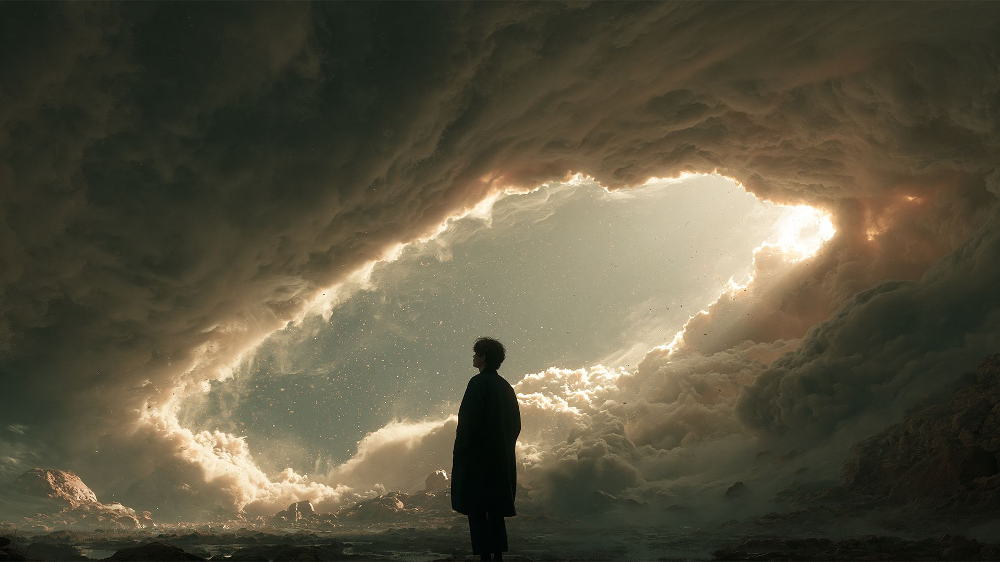
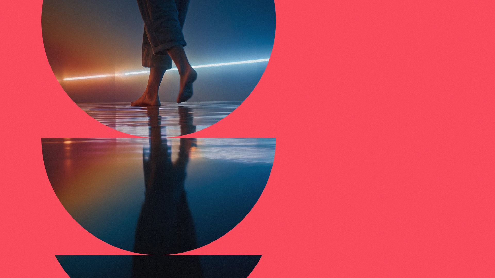
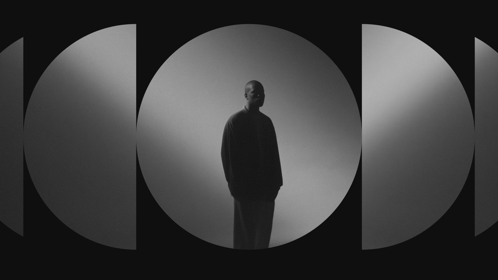
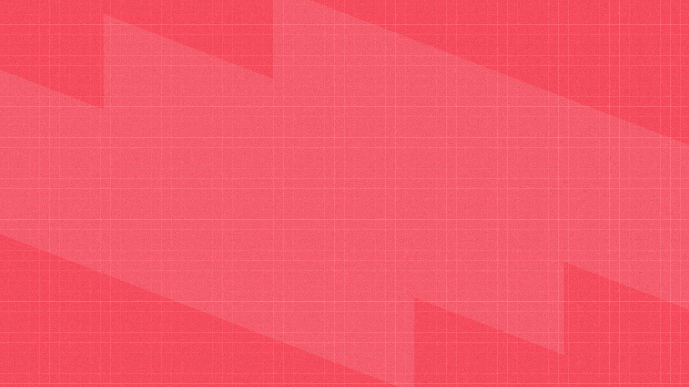
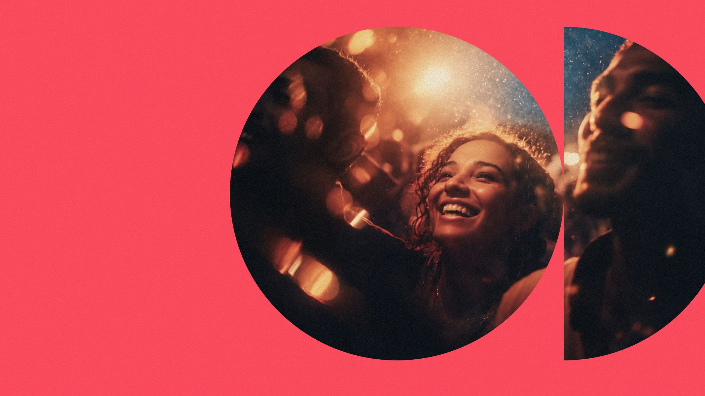
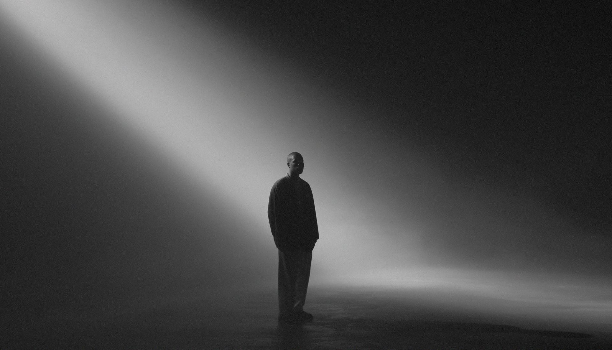

How wepitch now
Brief to live deck with Claude, GitHub and Vercel
Today’s
agenda
- [01]Why webdecks2 mins
- [02]The workflow2 mins
- [03]Story and brand5 mins
- [04]Build, connect, publish5 mins
- [05]Edit live, work together4 mins
- [06]What’s next: Noodle3 mins
- [07]Your prompt kit2 mins

We are Spatial StorytellersA pitch should feel like a place
A webdeck is a presentation built as a web page. We design and build places to be. Our decks can do the same.
- One linkSend it before, present from it, leave it behind.
- Any screenLaptop, phone or the big screen in the room.
- On brandReal fonts, colour and motion, exactly as designed.
Versions in inboxes. Fonts that break. Edits that mean re-sending.
Eight steps
to a live deck
Story
Give Claude the context, or the exact narrative.
[02]Brand
Share the guidelines: type, colour and tone of voice.
[03]Build
Ask Claude for a webdeck that answers the brief.
[04]Connect
Link GitHub and Vercel through Claude’s connectors.
[05]Publish
Repo in, live URL out.
[06]Edit live
Changes land on the same link in real time.
[07]Collaborate
Bring the team into the repo.
[08]Noodle
One shared system that grows with the brand.
In the worksGive Claude the story
Start with the project, proposal, pitch or concept. Share the brief, notes, transcripts and facts that matter.
Want more control? Break the narrative down slide by slide. You keep the storytelling, Claude does the build.
More direction gives you more control. Less direction gives Claude room to surprise you. Both work.
Give Claude the brand
Attach the guidelines PDF or paste the essentials: fonts, colour values and tone of voice. The more exact you are, the more on-brand the result.
- Brand Guidelines V4
- Copy Style Guide
- Hello Deck template
This deck is the proof. Everything on this slide came straight from those three files.
- UK English, no Oxford comma, sentence case headings
- Legibility wins. One idea per page.
- Seeper with a capital S. Spatial Storytellers keeps its capitals.

Ask for the webdeck
Using the brief and the Seeper brand guidelines above, design and build a webdeck: a single HTML page with one full-screen slide per idea. Include keyboard and click navigation, a slide counter, speaker notes (press N) and a layout that works on phones. Keep headings emotive and body copy factual. Only use claims from the brief.
- Ask to see it first, then refine slide by slide
- Ask for one interactive moment where it helps the story
Connect GitHub and Vercel
GitHub
Where the deck’s code lives, with every version saved.
- In Claude, open Settings → Connectors and connect GitHub.
- Create a repository for the deck, or let Claude create one for you.
- Give Claude access to that repository.
Vercel
Where the deck is hosted, on a link you can share.
- Connect Vercel in the same Connectors panel.
- Import the GitHub repository as a new Vercel project.
- From then on, every change to the repo redeploys the site.
Repo in.
Live link out.
Claude
Writes the deck from your story and brand
GitHub
Stores the code and every change
Vercel
Builds and hosts the site
Your URL
Share by link or QR code, on any screen
Claude hands you the address. Send it before the meeting, present from it in the room, leave it behind afterwards.
Change a line. See it live.
Ask for edits in plain English: “make slide four punchier”, “swap the hero image”, “add the latest figures”. Claude updates the repo and Vercel republishes the same link.
Try it. Type a new headline and publish it.
How we pitch now
Version 1
Build it together
Invite
Add teammates to the GitHub repository as collaborators. Everyone works from one source.
Preview
Try ideas on a branch. Vercel gives each one its own preview link to review before it goes live.
Comment
Leave feedback directly on preview pages, then ask Claude to action it.

Noodle
Noodle cuts out the middle man. We’ll all be using the same designs, templates and updates. As the brand updates, Noodle updates.
- One shared sourceSame designs, templates and updates for everyone.
- Moves with the brandWhen the brand updates, Noodle updates.
- Built togetherWe work with it symbiotically to make new things.
- Faster for everyoneHelps anyone less comfortable or fluent with GitHub, as the process is much faster.
What makes a strong webdeck
One idea per slide
If a slide needs two headings, it’s two slides.
Feel, then fact
The heading moves people. The line underneath says plainly what we do.
Pairs, not just threes
Not every list needs three items. Two is often stronger.
Write the notes
Ask Claude for speaker notes so anyone can present it.
Check it on a phone
Most people open the link on their phone first.
Prove every claim
Only use figures we can back up. Check them before it goes live.




Fluency comes with use
This way of working asks for more fluency with Claude, GitHub and Vercel. It’s worth it, and we’ll learn it together.
- StartAsk Claude for a webdeckGive it a story and the brand. Review it in the chat.
- NextKeep it in GitHubConnect GitHub and let Claude save the deck to a repo.
- ThenPublish and shareGo live on Vercel and invite the team in.
Copy, fill, go
One prompt that covers steps one to five. Fill in the brackets, attach the brand guidelines and send.
Tip: once it’s live, keep the same conversation going for edits so Claude has the full context.
CONTEXT I’m preparing a [pitch / proposal / concept] for [audience]. The project: [what it is, in two or three lines]. What we want them to feel: [ ]. What we want them to do: [ ]. Key facts we can prove: [ ]. Attached: [brief, notes, images]. NARRATIVE (optional, for more control) Slide 1: [heading] · [one line] · [visual idea] Slide 2: … BRAND Use the attached Seeper brand guidelines and Copy Style Guide. Display: Special Gothic Expanded One. Body: Inter. Labels: IBM Plex Mono. Black, white and accent coral #FF4C5E. UK English. Headings emotive, body factual. BUILD Design and build a webdeck: a single HTML page, one full-screen slide per idea, keyboard and click navigation, speaker notes and a phone-friendly layout. PUBLISH Save it to a new GitHub repo called [deck-name], deploy it on Vercel and send me the live URL.

Let’s talk
Questions, ideas or a pitch you want to try this on? Bring it, and we’ll build it together.
This deck was made with exactly this workflow.
- Presented by
- Caitríona McAllister
- We are
- Spatial Storytellers
- Website
- seeper.com